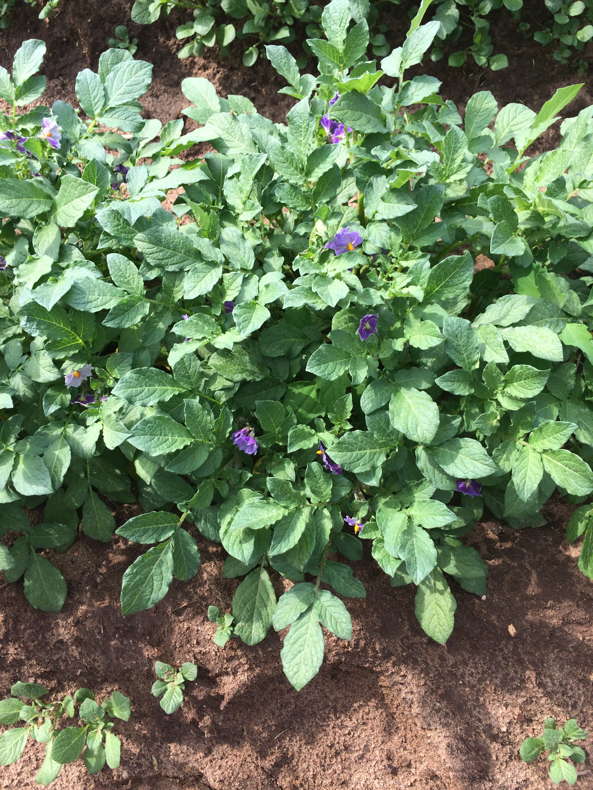

Potato Genome Variation
Cultivated potato is a vegetatively propagated autotetraploid with a highly heterozygous genome, unique among other major crop and model plant species. The assembly of characteristics that define commercial potato relies on the a complex balance of multiallelic loci with frequent epistatic interactions that are lost through sexual reproduction, with the frequent result that most sexual progeny are inferior to either parent as a result of inbreeding depression. We have limited knowledge regarding the molecular nature of heterozygosity and allelic composition in the potato genome and how these correlate with phenotype. In addition, we have discovered that the potato genome is abundant in copy number variation (CNV) which has recently been revealed be a major contributor to the genetic variation in the human genome. The objectives of this proposal are focused on understanding the contribution of allelic and haplotype composition, CNV, presence/absence variants, epigenetic state, and gene expression levels to biomass production and a complex of phenotypic traits associated with fitness in potato. Using a structured set of potato germplasm that includes a panel of monoploids/doubled monoploids, a segregating diploid population and a population of haploid derivatives of tetraploid potato we will: (1) Utilize high throughput sequencing to associate alleles, haplotypes, and presence/absence variants with biomass production and a complex of phenotypic traits associated with fitness in potato. (2) Perform whole transcriptome sequencing to analyze gene expression with respect to allelic composition. (3) Perform genome-wide mapping of histone modifications and analyze their association with allelic composition and gene expression. (4) Perform genome-wide mapping of CNVs among diverse potato lines to assess the extent of CNV in the potato genome.
The proposed research will generate the first high-resolution map of genome variation and its association with gene expression, epigenetic modifications, and phenotypic traits in potato that can serve as a model for vegetatively propagated, polyploid and highly heterozygous crop species. The proposed CNV study will reveal if CNV plays as significant a role in genetic variation in plants as in humans and model animal species. The genome-wide transcriptomic and histone modification data will be valuable resources for the potato genome research community to facilitate understanding of how genome variation and epigenetic state contributes to other biological processes.
Our outreach program includes four specific components: (1) We will engage the public in plant biology, specifically in the uses of potato and its unique biology, through a suite of activities with the MSU Children’s and Horticulture Garden involving all age groups. (2) We will engage under-represented groups in bioinformatics and computational biology to increase representation of women in this discipline. (3) We will train graduate students and postdoctoral fellows in an integrated suite of emerging disciplines including bioinformatics, genomics, and epigenomics. (4) We will involve high school and undergraduates from under-represented groups in our research to provide opportunities for students to see science as a viable career opportunity.

In February 2014, Buell and Douches meet at MSU with President Obama and USDA Secretary of Agriculture Vilsack.
Project Directors
Contact
buell@msu.eduFunding
Funding through the National Science Foundation Plant Genome Research Program (IOS-1237969).